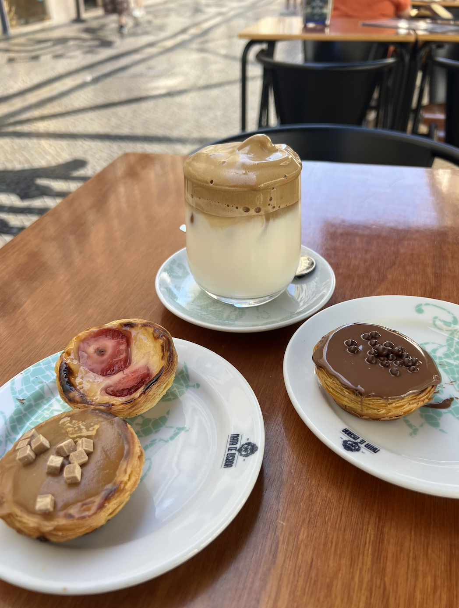

Lisbon

best viewpoint in lisbon!

Pastéis de Belém

Conserveira de Lisboa

tram 28
This was the last leg of my trip in 2023 before my last year of college. I found the locals in Lisbon particularly friendly, and even made some friends. My main recommendations for food are seafood (squid and sardines) and the famous Pastéis de Belém.